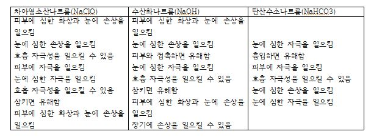
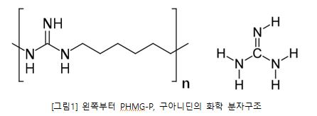
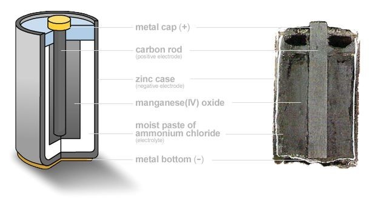
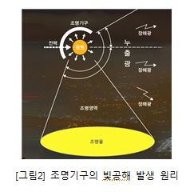
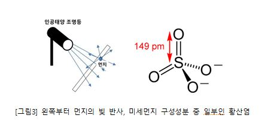

'괜찮겠지 뭐,'
화학의 싱크홀에 빠지다
30807 김유민, 30825 임수현
* 안녕하세요. 저희는 실제 주변에서 쉽게 발견할 수 있는 화학 성분 포함 제품을 주로 다루어 많은 사람들이 오해하고 있는 부분, 혹은 미처 몰랐던 부분에 대해 설문을 통해 확실히 알리고자 합니다. 설문은 익명이니 경험한 바에 따라 편안히 응답해주시길 바랍니다. 설문에 응답한 이후 아래 글을 읽어주세요. 감사합니다. *
화학 약품 사용 안전
우리의 건강을 위협하는 화학 물질!?
우리는 일상 속에서 아주 다양한 화학 약품을 접한다. 의약품, 화장품부터 손세정제, 물티슈, 농약이나 제초제, 제설제까지 이미 우리 주변에는 화학 약품이 산개하여 있다. 지난 2020년 6월 3일, 물류센터 직원 식당 조리사 한명이 돌연사 하였다. 이 직원은 직원 식당 청소를 하던 중, 갑자기 쓰러지는 증세를 보였다. 또 지난 2020년 8월 14일, 마찬가지로 급식실 청소를 하던 조리사 한명이 의식을 잃고 쓰러졌다. 이 두 사건의 원인은, 청소 당시에 사용한 화학 약품으로 추정된다. 기름때나 얼룩을 지우고, 표백을 하는 데에 쓰이는 세정제의 주성분인 차아염소산나트륨이나 수산화나트륨, 탄산수소나트륨은 모두 장시간 노출 시 건강에 위해를 끼친다. 이하 자료는 대한민국 정부에서 운영하고 있는, ‘생활안전정보시스템 초록누리’에 게재되어있는 화학 물질 정보이다.
밀폐된 공간에서 휘발성이 있는 화학 약품을 쓰면 안 되는 이유
앞서 이야기한 모든 화학 물질은 상온에서 고체나 액체이다. 하지만, 이들의 유해성 정보에는 공통적으로 호흡기에 악영향을 끼칠 수 있다는 내용이 담겨있다. 어찌된 일일까.
이를 이해하기 위해서는 조금의 배경지식이 필요하다. 먼저, 물질의 상태는 고체, 액체, 기체로 나뉘고, 이때 액체 표면에서 분자가 떨어져나가며 조금씩 기체로 변하는 현상을 증발이라 한다. 또한 모든 물질은 ‘엔탈피’라는 물리량을 가진다. 엔탈피는 일정한 압력 하에서 물체가 가지는 에너지를 의미하며, 직접적으로 측정할 수는 없고, 우주에서 엔탈피의 총량은 언제나 일정하다. 하지만 물질이 다른 물질과, 혹은 제 스스로 ‘반응’을 일으키면, 엔탈피가 ‘열’의 형태로 물질 들어오거나 물질에서 빠져나가므로, 반응이 일어나는 계에서의 온도 변화를 측정하면 엔탈피의 변화량만은 알 수 있다.
액체는 고체보다, 기체는 액체보다 각각의 분자가 일으키는 운동이 활발하다. 이는 분자들이 가진 엔탈피의 차이 때문이다. 액체를 구성하는 분자들은 엔탈피가 작아 기체를 구성하는 분자들보다 덜 활발하게 움직인다. 그래서 액체에 열을 가하면, 엔탈피가 충분히 증가했을 때 액체가 기체로 변한다. 하지만, 이때 우리에게는 한 가지 의문이 생긴다. 이에 따르면, 증발은 엔탈피가 증가했을 때 일어날 법한 반응이고, 엔탈피가 증가한다는 것은 외부에서 물질이 속한 계로 열에너지를 가해줬다는 것인데, 청소를 할 때 락스를 뿌린 뒤 불을 지르는 사람은 당연히 없다. 그렇다면 어째서 엔탈피 증가 없이도 반응이 일어나는 것일까?
이를 위해서는 '열역학 제 2법칙'에 대해 학습할 필요가 있다. 열역학 제 2법칙이란, 흔히 엔트로피의 증가 법칙이라 불리며, 모든 물질은 ‘엔트로피’라는 물리량을 가지고, 이 우주의 모든 물리적, 화학적 현상은 이 ‘엔트로피’가 늘어나는 방향으로만 발생한다는 것이다. 예를 들어, 1만 피스 퍼즐을 사서, 그 상자를 열고, 퍼즐 조각들이 들어있는 봉투를 열어, 그대로 바닥에 쏟는 모습을 상상해보자. 이때 쏟아진 퍼즐 조각들이 제 스스로 완벽히 맞추어지는 것이 가능할까? 이것이 불가능한 이유가 앞서 이야기한 열역학 제 2법칙이다. ‘엔트로피’는, 간단하게 이야기하면, 혼란한 상태일수록 큰 물리량이다. 그렇기 때문에 퍼즐조각이 제 스스로 맞추어지거나, 쏟아진 물이 스스로 다시 컵에 담기는 현상은 일어나지 않는다.
앞서 이야기한 엔탈피와 엔트로피로, 액체나 고체 상태인 화학 약품이 기체 상태로 증발해, 공기 중으로 확산되어 호흡기에 침투하는 현상의 이유를 설명할 수 있다. 먼저 모든 반응은 우주의 엔트로피를 증가시킨다. 이에 따르면 모든 반응은 자발적으로 일어날 수 있어야 한다. 하지만, 엔탈피가 증가하는 반응은 외부에서 열이 유입되지 않는 이상 자발적으로 일어날 수 없다. 이러한 서로 상반되는 두 개념을 잇는 개념이 [깁스 자유에너지]이다. 깁스 자유에너지란, 반응의 자발성 여부를 결정하는 물리량으로, 이것의 변화량이 0보다 작으면 자발적인 반응, 0보다 크면 자발적인 반응이다. 깁스 자유에너지의 변화량은 ‘엔탈피의 변화량’에서 ‘온도(절대온도 값)’와 ‘엔트로피의 변화량’을 곱한 값을 빼어 구한다.
상기한 화학 약품들은 상온에서 깁스자유에너지가 음수 값이기 때문에, 증발이라는 물리적 반응이 일어나고, 증발된 기체는 열역학 제 2 법칙에 의해 공기 중으로 확산되어 체내에 침투한다.
화학 약품 사용 안전을 위해 해야 할 것
우리 주변에 일상적으로 자리하는 화학 약품 중에는, 그 용도를 실현하기 위해 유해물질이 첨가되어있는 경우도 간혹 있다. 하지만, 이는 (기준에 위배된 일부 불법적인 경우나, 아직 연구가 부족해 기준이 세워지지 않은 물질인 경우를 제외하고는) 적절한 사용 조건에 따르고, 용법을 지키면 임상적으로 안전하다 입증된 함량이므로, 적절하게 사용하면 오히려 삶을 평안케 하는 좋은 물질이 된다. 따라서 화학 약품을 사용할 때에는 그 용법과 주의 사항, 실수 등에 의한 오용 시의 대처 방법 등을 미리 충분히 숙지한 채로 사용하는 것이 바람직하다.
이때, 기준을 세우고, 안전한 용법을 찾아 알리는 일은, 개인적 차원에서 할 수 없는 일이므로, 회사는 자사 제품에 그 안전성이 충분히 입증된 물질만을 사용하며 이것의 용법과 주의 사항을 온전하게 명문화하고, 국가는 국민의 생명과 안전에 대한 보호를 위해 이 의무를 회사에 부여하며 국민에게 이 정보를 알리는 역할을 맡아야 할 것이다.
안전마크, 주의사항이 올바르게 기재되어 있었던 가습기 살균제, 이런 경우엔 어떻게 해야 하나요?
사건의 시작
가습기 살균제 사건은 가습기 살균제를 사용함으로 인해 폐가 딱딱하게 굳어가는 폐섬유증, 내지는 사망에 이르기까지의 치명적인 부작용이 2011년 4월 이후 불거진 사건이다.
2011년 4월, 서울의 한 대학병원 중환자실에선 급성호흡부전이 주 증상인 중증폐렴 환자가 급증하는 신고가 접수되었고 1994년부터 2011년에 이르기까지 사망자만 2만여 명에 달했다. 세계적 차원에서도 가습기 살균제 사건의 규모는 드문 수준이었다. 이에 따라 '원인미상 중증폐질환 발생 규모 및 질병 특성 파악을 위한 연구'가 이루어졌고 그 원인이 가습기 살균제라는 것이 2011년 8월에 밝혀졌다.
가습기 살균제, 도대체 무엇인가?
가습기 살균제란 가습용 물에 첨가하여 가습기를 통해 공기 중으로 분무되도록 만들어진 살균제로, 유일하게 한국에서만 세계 최초로 개발되었다. 보편적으로 살균제는 사용자에게 심각한 피해를 줄 수 있기 때문에 반드시 필요한 경우에만 사용해야 하며, 호흡으로 흡입하거나 섭취, 각막 침입은 금물이었다. 더불어 같은 물질임에도 불구하고 노출 경로에 따라 독성이 달라지므로 공기 중으로 분무되는 가습기 살균제의 경우 흡입독성 수치에 대한 절차가 철저하게 관리되어야 한다. 그러나 각 기업은 수익 활동에만 몰두했으며, 흡입독성이 정확하게 평가되지 않은 상태에서 상품을 출시하게 된 것이다.
가습기 살균제 속 가장 큰 피해를 준 물질은 폴리헥사메틸렌구아니딘 인산염(Polyhexamethylene guanidine phosphate, PHMG-P)이라 불리는 유독 화학 물질이었다.
PHMG-P의 'G'인 구아니딘은 3개의 질소원자에 의해 결합되며 산성 양전하(H)가 분산되어 안정화된 분자 구조를 갖고 있다. 이에 따라 강염기성을 가져 이온화 상수인 pKa 값이 12.5이고, 생리적 조건에서는 +1가 양이온으로 존재하는 유기화합물이다. 이는 인체 내로 유입될 경우 세포막 상에 존재하는 음전하 인지질 분자와 정전기적 상호작용이 이루어져 박테리아의 세포막을 파괴한다. 그러나 PHMG-P는 박테리아 세포막뿐만이 아닌 인간의 세포막까지 파괴한다는 것이다. 즉, 가습기 살균제 속 물질은 인간 세포에 대한 세포 독성을 지녔다는 의미이다.
우리가 가져야 할 태도는?
기업들은 흡입독성을 제대로 연구하지 않은 채 치사율이 70~80%에 이르는 치명적인 독성 물질이 함유된 가습기 살균제를 출시했으며, 이로 인해 유아층부터 노년층까지 화학 재해로부터 보호받지 못하고 심각한 피해를 입었다는 점에서 책임을 질 의무가 있다. 그러나 독성물질에 대한 발표가 있었음에도 불구하고 기업에 대한 처벌은 사건 발생이 5년이 지난 시점에서야 이루어졌으며, 2017년 8월에 ‘가습기 살균제 피해구제를 위한 특별법’이 채택되었다. 처벌과 구제가 이루어지지 않은 기간 동안 가습기 살균제로 인해 피해받은 중증 환자들은 1억이 넘는 이식비와 350만 원 가량의 치료비를 부담해야 했다.
가습기 살균제 사용법 및 주의사항에 ‘인체에 무해하다’는 내용이 표기되어 있었고, 가습기 살균제 사건으로 인해 소비자들은 안전인증 마크가 표시되어 있음에도 불구하고 제품의 안전성에 대해 불안감을 품을 수밖에 없게 되었다. 보통의 세정제, 탈취제 등의 생활화학제품 관련 사고는 소비자가 주의사항을 제대로 숙지하지 않아 발생한다. 사용법을 정확히 이해하고 사용하는 것 또한 필수지만, 기업과 정부가 올바른 방향으로 더욱 적극적으로 나서야 한다. 기업은 주의사항을 잘 읽지 않고 사용하려는 소비자들을 분석하여 대처하고, 제품 출시의 목적으로 이익이 앞서선 안 된다. 정부는 이러한 기업이 등록하는 제품이 인체 건강과 직결될 경우 안전인증 절차를 더욱 철저하게 진행해야 하며, 이와 관련하여 처벌이나 피해자 구제 정책이 민첩하게 활성화되어야 한다.
건전지 취급 안전
건전지의 위험성
건전지는 현대 사회에서 몹시 유용한 물건이다. 리모컨, 손 선풍기, 무선 마우스, 터치펜 등등 어디에나 건전지가 쓰이고 있다. 하지만, 건전지는 그 취급에 있어 큰 주의를 요한다. 가격대비 수명과 성능이 제일 뛰어나 가장 많이 쓰이는 알칼리 건전지는 특히나 조심해야한다.
건전지의 구조와 건전지가 위험한 이유
전지는 재사용이 불가능한 1차 전지와 재사용이 가능한 2차 전지로 나뉘며, 건전지는 1차전지이다. 전지는 화학 에너지를 산화와 환원을 통해 전기에너지로 바꾸는 장치로, 1차 전지는 크게, 양극판, 음극판, 전해액으로 이루어져 있다. 일반적으로 금속 원소는 전자를 잃고 양이온이 되려는 경향이 있는데, 이것을 금속의 이온화 경향이라고 한다. 이온화 경향이 클수록 전자를 잃고 양이온이 되기 쉽다. 음극판은 이온화 경향이 상대적으로 큰 금속을, 양극판은 이온화 경향이 상대적으로 작은 금속을 사용해 만든다.
양극판과 음극판의 한쪽 끝을 한 회로에 물리고, 다른 한쪽 끝을 전해액(전해질(=물에 녹는 물질)을 녹인 용액. 전류가 흐를 수 있음)에 담그면 음극판에서는 금속이 산화되어 양이온을 만들고, 이때 발생한 전자가 전류를 타고 흘러 양극판으로 이동해 양극판의 금속을 환원시킨다. 이러한 과정에서 전류가 흐른다. 알칼리 건전지는 전해액을 염기성 물질인 수산화칼륨, 양극을 이산화망간, 음극을 아연을 이용해 만든 건전지이다.
알칼리 건전지의 표면이 외부 압력으로 인해 파손되거나, (전자기기에 건전지를 넣고 오랫동안 방치하거나, 서로 남은 잔량이 다른 건전지를 사용하거나 하는 이유로 인해 발생한) 과도한 전류로 내부의 수분이 전기분해 되어 수소기체와 산소기체로 나뉘고 이 내부 압력으로 인해 파손되면 전지 내부의 수산화칼륨 용액이 외부로 유출되며, 이를 ‘누액’이라 지칭한다.
수산화칼륨은 강한 염기성을 가져, 이를 만지거나 할 시 큰 손상을 입는다. 이러한 이유로, 알칼리 전지가 누액 되었을 시에는, 염기성 물질과 접촉해도 안전한 장갑을 착용하고, 전지는 두꺼운 봉투에 담아 그대로 밀봉해 폐기한다. 또한 누액의 영향이 미친 제품에는, 누액으로 인한 부식이 미미한 경우 식초와 같은 산성 용액을 적신 헝겊으로 조심히 닦아내고, 누액으로 크게 부식되었다면 폐기해야한다.
건전지를 안전하게 쓰는 법
알칼리 건전지는 우리가 일상 속에서 너무도 흔하게 접할 수 있는 물건이다. 하지만, 그러한 이유 때문에 그 취급에 소홀해서는 안 되는 물건이다. 평소 안 쓰는 전자기기의 건전지는 따로 빼두고, 남은 잔량이 서로 다른 전지는 꼭 따로 보관하고, 전지 사용 가능 기한이 얼마나 남았는지 기록해두는 습관을 지녀야 할 것이다. 부가적인 지식으로써, 알칼리 건전지는 일반 쓰레기에 버려도 된다.
인공조명을 장기간 노출시켜선 안 되는 이유
실내외 빛공해
빛공해는 인공조명에 의한 피해만을 대상으로 하며, 인공조명을 과도하게 소비할 경우에 해당된다. 대표적으로 흔히 볼 수 있는 건물의 가로등, 형광등, 보안등, 광고조명, 장식조명 등의 조명기구가 빛공해의 원인이 되고 있다.
조명기구는 조명하고자 하는 조명영역이 존재한다. 이때 위 사진과 같이 조명기구에서 조명영역에 도달하는 광속과 해당 기구에 사용되는 광속의 비율을 조명율이라고 하며, 이 빛이 조명 대상의 범위를 벗어날 경우 누출광이라고 한다. 인간활동이나 환경에 악영향을 미치는 장해광은 다음과 같은 부정적인 결과를 초래한다.
- 인공조명 불빛의 굴절 및 산란으로 인해 밝아지는 밤하늘
- 군집된 빛으로 인한 시각적 혼란
- 밤 중 빛이 눈에 들어와 시각 능력이 감소되거나 마비됨
- 과도한 에너지 사용으로 인한 낭비, 고갈
- 야생동물의 생체리듬 교란 및 방향감각 상실
빛공해 현상의 화학적 측면
대기 중 빛을 반사시키는 물질로 미세먼지가 있다. 미세먼지는 대기 중에 오랫동안 떠다니는 직경 10㎛ 이하의 입자상 물질로, 질산염, 암모늄, 황산염 등의 이온 성분과 탄소화합물, 금속화합물로 이루어져 있다. 그중 황산염은 황산 속 수소를 금속이나 암모늄으로 치환한 형태로, 황산 이온이라고도 부른다. 이때 금속 성질로 인해 생기는 자유전자는 인간이 육안으로 볼 수 있는 빛의 형태인 가시광선이 표면에 도달할 경우 가시광선을 흡수하여 같은 진동수로 진동하게 된다. 이에 따라 가시광선은 물질 안으로 들어가지 못하고 같은 진동수의 가시광선을 만들어 내놓으며 빛이 반사되는 듯한 현상을 만들어내는 것이다.
또한 천문적 물체의 정보를 제공하는 '분광학'은 천문학에서 가장 중요하게 취급하는 기구로, 물체의 스페트럼을 연구하여 화학적 성분, 특성, 온도, 속도를 측정해낸다. 이때 LED나 백열전구 등의 광범위한 스펙트럼을 가진 경우 다른 스펙트럼에 간섭하여 분광학 연구에 있어 어려움이 발생하기도 한다.
앞으로의 지구를 위해서
이외에도 야간 인공조명으로 인해 근처 농작물은 더 늦거나 이른 시기에 개화하여 식물의 신진대사가 제대로 이루어지지 않고 있다. 밤 중 별이나 달의 빛을 통해 이동하는 새들은 방향성을 잃어가고, 빛에 모여들거나 회피하는 어종에게 있어서 성장과 산란에 치명적인 영향을 끼친다. 빛공해의 심각성에 대한 인식은 과거와 대비하여 연구 대상으로 수많은 노력이 이루어지고 있으나, 인구밀도가 높은 지역은 여전히 개선되지 않은 상태이다. 현대를 살아가는 사람으로서는 밤에 빛 없는 활동이 불가능하다.
개인, 연구진, 그리고 세계는 야외조명을 최소화해야 하며 빛공해로 인한 전지구적 차원에서의 영향에 대한 정보를 정확하게 인식할 빛이 위로 새어나가는 것을 방지하도록 하는 기구 개선 및 개발에 힘써야 필요가 있다. 또한 빛이 필요한 곳엔 조명율을 효과적으로 제어하여 하며 인공지능 기술이 발달함에 따라 모션센서 전등을 연구하는 등 빛공해를 최소화하기 위한 총체적인 관심과 노력이 필요하다.